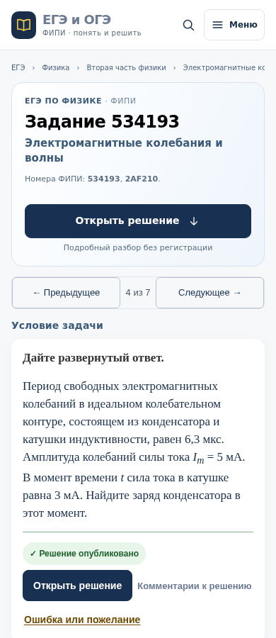

Опубликовано 25.11.2026 около 21:24 МСК.
Общая страница: /tasks/534193. На ней указаны оба исходных номера: 534193 и 2AF210. Адрес /tasks/2AF210 отвечает HTTP 301 и ведёт прямо на общую страницу, включая вариант с нижним регистром. Параметры запроса сохраняются; прежний якорь #solution-2AF210 поддержан на общей странице.
Оба ID ФИПИ остаются в исходном банке и SQLite, API по каждому номеру сохраняет прежний taskId и решение. Миграция или удаление исходных записей не выполнялись. Математическое условие, ответ, текст решения и схема сохранены.

Сохраняется прежний реестр единственной доказанной пары и контроль содержимого обеих страниц. Если условие, решение, ответ или схема изменятся либо публикация будет снята, редирект отключается: отдельные страницы, результаты поиска и запись Sitemap возвращаются до новой проверки. Комментарии разных заданий в этом случае показываются отдельно.
19 unit-тестов; по 37 HTTP-проверок и девять браузерных сценариев в предпросмотре и публично; отдельная проверка девяти контрактов идентичности. Проверены ширины 390/1280, старый якорь решения, поиск по двум ID, переходы из каталогов, последовательность семи страниц и работа без JavaScript. Аналитика, реклама и записи форм при браузерных проверках блокировались.
Семь проверок аннулирования реестра и общего обсуждения выполнены только в отдельной SQLite с временными тестовыми записями; записи удалены, исходное решение восстановлено. Все 12940 строк solutions по всем полям и 147 исходных HTML сохранены, quick_check=ok.
Перезапущен только ege-math.service; active/running, NRestarts=0. Предпросмотр остановлен. Новая повторяемая проверка: TASK_IDENTITY_ORIGIN=https://ege-fipi.ru npm run check:task-identity.